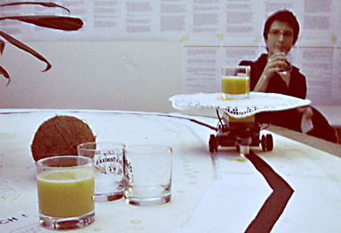

|  |
.......................... MR. COCO
MR. COCO ist einer der ersten Cocktail-Roboter, die von SHIFZ entwickelt wurden. MR. COCO dreht kontinuierlich seine Runden um einen Tisch, und bietet Drinks an. Er ekennt seinen Fahrspur aufgrund von Kontrastwerten.
|